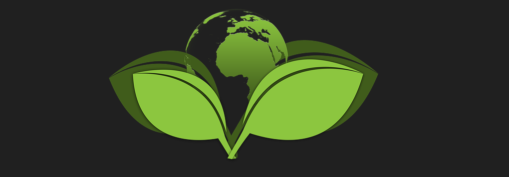

Selected Publications
For the full list, see the Google Scholar profile.
We integrate experiments and data analytics for synergized solutions
Sustainable Synthesis and Manufacturing
- Li et al., Transforming renewable carbon fiber performance, economics, and sustainability via oriented crystallization design, Matter, 2026.
- Dhatt et al., Biomimetic layered, ecological, advanced, multi-functional film for sustainable packaging, Nature Communications, 2025.
- Chen et al., Electro-biodiesel empowered by co-design of microorganism and electrocatalysis, Joule, 2025.
- Li et al., Integrated design of multifunctional reinforced bioplastics (MReB) to synergistically enhance strength, degradability, and functionality, Green Chemistry, 2025.
- Zhou et al., Computational modeling-guided design of deep eutectic solvents for tailoring lignin chemistry during lignocellulose pretreatment, Green Chemistry, 2025.
- Zhang et al., Chem-bio interface design for rapid conversion of CO2 to bioplastics in an integrated system, Chem, 2022.
- Li et al., Lignin molecular design to transform green manufacturing, Matter, 2022.
- Long et al., Machine learning-informed and synthetic biology-enabled semi-continuous algal cultivation to unleash renewable fuel productivity, Nature Communications, 2022.

Remediation and Recovery
- Zhang et al., Photocatalytic degradation of perfluorooctanoic acid under ambient conditions validated by duckweed as a sensitive ecotoxicity assay, Journal of Hazardous Materials: Organics, 2026.
- Long et al., Remediation and upcycling of microplastics by algae with wastewater nutrient removal and bioproduction potential, Nature Communications, 2025.
- Zhang et al., 3D structure-functional design of a biomass-derived photocatalyst for antimicrobial efficacy and chemical degradation under ambient conditions, Green Chemistry, 2024.
- Santiago-Cruz et al., Carbon adsorbent properties impact hydrated electron activity and perfluorocarboxylic acid (PFCA) destruction, ACS ES&T Engineering, 2024.
- Wang et al., Microplastics removal in the aquatic environment via fungal pelletization, Bioresource Technology Reports, 2023.
- Yu et al., Genomic diversity and phenotypic variation in fungal decomposers involved in bioremediation of persistent organic pollutants, Journal of Fungi, 2023.
- Zhang et al., Design of biomass-based renewable materials for environmental remediation, Trends in Biotechnology, 2022.
- Li et al., Sustainable environmental remediation via biomimetic multifunctional lignocellulosic nano-framework, Nature Communications, 2022.
Surveillance, Monitoring and Modeling
- Jiang et al., The effects of federal incentives on the automotive market and greenhouse gas emissions, Sustainable Futures, 2026.
- Simmons et al., Iowa population exposures to metals and metalloids in well water, Environmental Toxicology, 2026.
- Chen et al., Life cycle assessment and social benefits of producing bioplastic polyhydroxyalkanoates (PHAs) via integrating electrochemical CO2 conversion and microbial fermentation, ACS Sustainable Chemistry & Engineering, 2025.
- Mattson et al., Human biomonitoring without in-person interaction: public health engagements during the COVID-19 pandemic and future implications, BMC Medical Research Methodology, 2024.
- Yu et al., Artificial intelligence-based HDX (AI-HDX) prediction reveals fundamental characteristics to protein dynamics: mechanisms on SARS-CoV-2 immune escape, iScience, 2023.